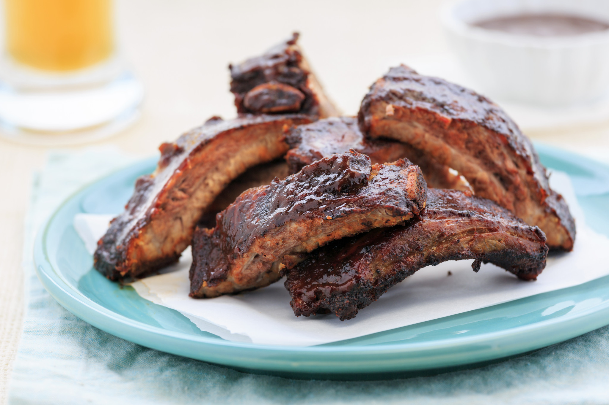

Braised Beef Short Ribs

Description
Ingredients
- Rack of beef short ribs
- 0.25 cup flour
- 0.25 cup brown sugar
- Salt
- Black pepper
- 0.5 teaspoon fresh thyme
- 0.5 teaspoon fresh oregano
- Seasonal vegetables
- 1 cup Beef Stock
- 1 cup hearty red wine (e.g. cabernet)
Steps
- An hour before grilling, remove ribs from packaging, remove membrane from underside, rinse with tepid water and dry with paper towels
- Apply the mixture of flour, sugar, salt, pepper, thyme and oregano on the ribs and work in with your hands so it's a good coating
- Rest ribs on counter and rise to room temp
- While that's happening, clean and prep the vegetables - covering with water, if necessary to prevent browning
- Pre-heat half of the grill to Medium-High, the other half no heat
- Spritz the ribs with a bit of oil and place on clean, hot grates
- Use tongs to turn so they don't burn and brown surface of rib on both sides (the outside color should be darker than peanut butter, but not as dark as chocolate)
- This may take anywher from 5-15 minutes, depending on the heat of your grill
- Watch closely because the sugar will tend to burn
- When they are brown, put them into the disposable pan (you can cut the rack in half, if you need to)
- Add the vegetables, wine, and beef stock to the pan with the ribs. Leave the pan over the hot side until the liquid is hot, and then turn down to low
- Cover the pan with foil and move the pan to un-heated section of the grill
- Close the hood of the grill and cook for at least 2 hours, opening the grill as little as possible
- When you check for doneness, add more stock, as necessary, to keep some liquid in the bottom
- The fat from the ribs, along with flour and liquid, will form a rich, dark gravy
- Remove the ribs to the kitchen and cut them into individual ribs for serving
- Plate with the vegetables and top with the gravy
Original Recipe
Home